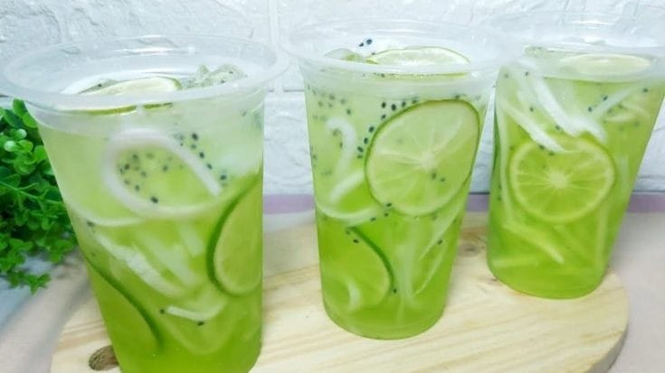

Es Kuwut merupakan sejenis minuman koktail dingin khas bali yang terbuat dari air kelapa yang dicampuri dengan serutan kelapa, serutan melon atau timun, biji selasih, perasan jeruk nipis, sirup melon, es batu dan terkadang ditambahkan susu, santan, atau nata de coco.
Resep Es Kuwut
300 Gram daging buah melon, serut panjang
300 Gram daging kelapa muda, serut panjang
Air jeruk nipis atau air jeruk peras secukupnya
Biji selasih yang sudah direndam dulu, sebelumnya
Sirup melon secukupnya
Air secukupnya
Es batu secukupnya